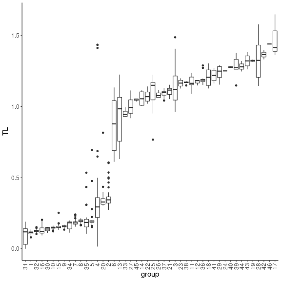
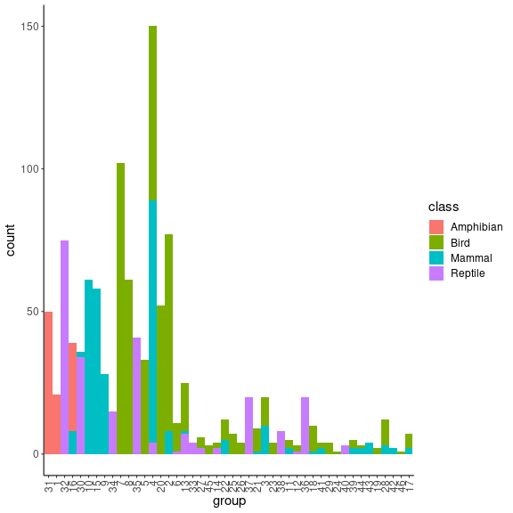

Metaweb of European vertebrates analysis
Marc Ohlmann
2022-11-28
Source:vignettes/vertebrates.Rmd
vertebrates.RmdThe European vertebrates data set
Metaweb of potential interactions between European terrestrial vertebrates. This data set is extracted from Maiorano et al. 2020 and O’Connor et al. 2020. It contains \(1122\) vertebrate species (birds, mammals, amphibians and reptiles) and \(49883\) expert-knowledge potential interactions. O’Connor et al. 2020 applied a Stochastic Block Model (SBM), a method that group together nodes with similar edge probability pattern (see Daudin et al. 2008). This method inferred \(46\) species groups. We also have classification of species in \(4\) classes (Amphibians, Birds, Mammals and Reptiles).
In this vignette, we aim at representing this large network using SBM groups.
Loading the data set
## metaweb has 1122 nodes and 49865 edges
## single network
## available resolutions are: sp group ClassAppend aggregated networks
To compute aggregated networks at the SBM group level and Class level, we use the append_agg_nets method.
meta_vrtb = append_agg_nets(meta_vrtb)Compute trophic levels
In order to represent this metaweb, we compute trophic levels since it is the first axis of ‘metanetwork’ layout.
meta_vrtb = compute_TL(meta_vrtb)We represent the distribution of trophic levels of the \(4\) classes and \(46\) SBM groups.
TL_df = cbind(name = V(meta_vrtb$metaweb)$name,
TL = V(meta_vrtb$metaweb)$TL,
group = meta_vrtb$trophicTable[V(meta_vrtb$metaweb),"group"],
class = meta_vrtb$trophicTable[V(meta_vrtb$metaweb),"Class"]) %>%
as.data.frame()
TL_df$TL = as.numeric(TL_df$TL)
#boxplot of trophic levels through Classes
ggplot(TL_df, aes(x=class, y=TL)) +
geom_boxplot() + theme_classic()
plot of chunk distrib_TL
#boxplot of trophic levels through SBM groups
ggplot(TL_df, aes(x=reorder(group, TL), y=TL)) +
geom_boxplot() + theme_classic() + xlab("group") +
theme(axis.text.x = element_text(angle = 90, vjust = 0.5, hjust=1),
text = element_text(size = 15)) We see that the four classes contain species of various trophic levels. SBM groups are more ordered in terms of trophic level, even if several trophic groups have similar trophic levels. It is a finer scale than the class level. We then represent the group composition in terms of classes.
TL_df_mean = TL_df %>%
dplyr::group_by(group) %>%
dplyr::summarise(dplyr::across(TL, mean, na.rm = TRUE)) %>%
as.data.frame()
rownames(TL_df_mean) = TL_df_mean$group
TL_df_agg = TL_df %>% dplyr::count(group,class) %>%
dplyr::mutate(TL = TL_df_mean[group,2])
ggplot(TL_df_agg, aes(fill=class, y=n, x=reorder(group, TL))) +
geom_bar(position="stack", stat="identity") + theme_classic() + xlab("group") +
theme(axis.text.x = element_text(angle = 90, vjust = 0.5, hjust=1),
text = element_text(size = 15)) +
ylab("count") We see that groups are getting smaller when their mean trophic level increases. Moreover, SMB groups are relatively well separated trough classes.
#this group contains several eagles species
which(meta_vrtb$trophicTable[,"group"] == 17) %>% names()## [1] "Accipiter_gentilis" "Aquila_adalberti" "Aquila_clanga"
## [4] "Aquila_heliaca" "Hieraaetus_fasciatus" "Lynx_lynx"
## [7] "Hyaena_hyaena"## [1] "Bubo_bubo"## [1] "Canis_lupus" "Vulpes_vulpes"Represent the metaweb
In order to represent this large metaweb, we first represent the network at the SBM group level. We will use then the layout at the SBM level to compute the layout at the species level. This layout is called group-TL-tsne, as TL-tsne is the diffusion based layout of metanetwork.
Representation at the SBM level
Using ggmetanet and the precomputed layout for beta = 0.005, we first represent the web at the SBM group level
beta = 0.005
#custom ggnet parameters
ggnet.custom = ggnet.default
ggnet.custom$label = T
ggnet.custom$edge.alpha = 0.5
ggnet.custom$alpha = 0.7
ggnet.custom$arrow.size = 1
ggnet.custom$max_size = 12
net_groups = ggmetanet(meta_vrtb,g = meta_vrtb$metaweb_group,flip_coords = T,
beta = beta,legend = "group",
ggnet.config = ggnet.custom,edge_thrs = 0.1)
net_groupsplot of chunk SBM_level
To compute layout for another \(\beta\) value, you can do:
beta = 0.0035
meta_vrtb = attach_layout(meta_vrtb,meta_vrtb$metaweb_group, beta = beta)
#custom ggnet parameters
ggnet.custom = ggnet.default
ggnet.custom$label = T
ggnet.custom$edge.alpha = 0.5
ggnet.custom$alpha = 0.7
ggnet.custom$arrow.size = 1
ggnet.custom$max_size = 12
net_groups2 = ggmetanet(meta_vrtb,g = meta_vrtb$metaweb_group,flip_coords = T,
beta = beta,legend = "group",
ggnet.config = ggnet.custom,edge_thrs = 0.1)
net_groups2plot of chunk SBM_level_2
The attach_layout method allows storing computed layout as node attribute
#get computed layout names on metaweb_group
vertex_attr_names(meta_vrtb$metaweb_group)## [1] "name" "ab" "TL"
## [4] "layout_beta0.008" "layout_beta0.004" "layout_beta0.005"
## [7] "layout_beta0.0035"
'group-TL-tsne' layout
To represent the metaweb at the species level, we do not compute ‘TL-tsne’ at the species level. Instead, we mix the layout computed at SBM level and a regular igraph layout to provide a representation where species from the same group are clustered together. Such approach provides more stable and interpretable. Morever, it is more efficient in terms of computation time since it only requires 'TL-tsne' layout computation at the SBM level instead of computing it in higher dimension at the species level.
We call this layout 'group-TL-tsne'.
beta = 0.005
ggnet.custom = ggnet.default
ggnet.custom$label = F
ggnet.custom$edge.alpha = 0.02
ggnet.custom$alpha = 0.7
ggnet.custom$arrow.size = 1
ggnet.custom$max_size = 3
ggnet.custom$palette = "Set2"
#add images in the legend (if NULL, legend will represent group names only)
ggnet.custom$img_PATH = "silouhette_metaweb_europe"
net_group_layout = ggmetanet(meta_vrtb,flip_coords = T,mode = "group-TL-tsne",
beta = beta,legend = "group",ggnet.config = ggnet.custom)
plot of chunk group-layout
net_group_layoutplot of chunk group-layout
Since the number of groups is large (\(46\)), metanetwork builds a legend containing shapes and colors. \(4\) different shape types are ordered along the trophic level axis. By doing so, basal species groups have the same shapes (squares and big circles here). Colors are ordered along the second axis. Moreover, we use ‘phylopic’ silhouettes to illustrate each group. We choose a representative species for each group (see vignettes/silouhette_metaweb_europe folder for silhouettes and phylopic credits) and metanetwork builds the legend using ggimage package.
beta = 0.0035
#attaching `group-TL-tsne` for beta = 0.0035, must provide resolution for the groups
meta_vrtb = attach_layout(meta_vrtb,meta_vrtb$metaweb,beta,
mode = "group-TL-tsne",res = "group")
#representing it
net_group_layout2 = ggmetanet(meta_vrtb,flip_coords = T,mode = "group-TL-tsne",
beta = beta,legend = "group",ggnet.config = ggnet.custom)plot of chunk group-layout2
net_group_layout2plot of chunk group-layout2
The legend is different from the previous plot due to stochasticity of 'TL-tsne layout. However, since trophic level is fixed, shapes remain the same.
'TL-tsne' layout
We represent here the web at species level using 'TL-tsne' layout. We do not recommend to use this layout for large networks since it is hard to interpret, unstable and costly in terms of computation time.
beta = 4e-06
#remove legend plot
ggnet.custom$legend.big.nets = F
ggnet.custom$img_PATH = NULL
ggmetanet(meta_vrtb,beta = beta,legend = "group", mode = 'TL-tsne',
ggnet.config = ggnet.custom,flip_coords = T)plot of chunk TL-tsne_species
It highlights the fact that basal species groups are not well separated on the TL-tsne axis.
Playing with representation parameters
group-TL-tsne configuration
If the mean position of groups in 'group-TL-tsne' layout is fixed, a configuration object allows controlling for height and width of the groups in the same way than ggnet.config.
beta = 0.0035
# group-layout config
group_layout.custom = group_layout.default
group_layout.custom$nbreaks_group = 3
group_layout.custom$group_height = c(7,4,2)
group_layout.custom$group_width = c(7,4,2)
#attaching `group-TL-tsne` for beta = 0.0035, must provide resolution for the groups
meta_vrtb = attach_layout(meta_vrtb,meta_vrtb$metaweb,beta,
mode = "group-TL-tsne",res = "group",
group_layout.config = group_layout.custom)
#representing it
net_group_layout3 = ggmetanet(meta_vrtb,flip_coords = T,mode = "group-TL-tsne",
beta = beta,legend = "group",ggnet.config = ggnet.custom)
net_group_layout3plot of chunk group_config
Playing on transparency
In order to represent sub-networks, we advise to play on transparency (alpha). We represent here the metaweb of mammals.
beta = 0.005
mammals_names = names(which(meta_vrtb$trophicTable[,"Class"] == "Mammal"))
ggnet.custom$label = F
ggnet.custom$label.size = 2
net_mammals = ggmetanet(meta_vrtb,flip_coords = T,mode = "group-TL-tsne",
beta = beta,legend = "group",ggnet.config = ggnet.custom,
alpha_per_node = list(nodes = mammals_names,
alpha_focal = 0.7,
alpha_hidden = 0.1)) +
ggtitle("Mammals")
net_mammalsplot of chunk mammals
Similarly, we represent the metaweb of birds, amphibians and reptiles (with the same layout) and represent them on the same plot
bird_names = names(which(meta_vrtb$trophicTable[,"Class"] == "Bird"))
net_birds = ggmetanet(meta_vrtb,flip_coords = T,mode = "group-TL-tsne",
beta = beta,legend = "group",ggnet.config = ggnet.custom,
alpha_per_node = list(nodes = bird_names,
alpha_focal = 0.7,
alpha_hidden = 0.1)) +
ggtitle("Birds")
amphibian_names = names(which(meta_vrtb$trophicTable[,"Class"] == "Amphibian"))
net_amphibians = ggmetanet(meta_vrtb,flip_coords = T,mode = "group-TL-tsne",
beta = beta,legend = "group",ggnet.config = ggnet.custom,
alpha_per_node = list(nodes = amphibian_names,
alpha_focal = 0.7,
alpha_hidden = 0.1)) +
ggtitle("Amphibians")
reptile_names = names(which(meta_vrtb$trophicTable[,"Class"] == "Reptile"))
net_reptiles = ggmetanet(meta_vrtb,flip_coords = T,mode = "group-TL-tsne",
beta = beta,legend = "group",ggnet.config = ggnet.custom,
alpha_per_node = list(nodes = reptile_names,
alpha_focal = 0.7,
alpha_hidden = 0.1)) +
ggtitle("Reptiles")
nets_all = gridExtra::grid.arrange(net_mammals,net_birds,
net_amphibians,net_reptiles,nrow = 2)plot of chunk grid
References
Daudin, J. J., Picard, F., & Robin, S. (2008). A mixture model for random graphs. Statistics and computing, 18(2), 173-183.
Maiorano, L., Montemaggiori, A., Ficetola, G. F., O’connor, L., & Thuiller, W. (2020). TETRA‐EU 1.0: a species‐level trophic metaweb of European tetrapods. Global Ecology and Biogeography, 29(9), 1452-1457.
O’Connor, L. M., Pollock, L. J., Braga, J., Ficetola, G. F., Maiorano, L., Martinez‐Almoyna, C., … & Thuiller, W. (2020). Unveiling the food webs of tetrapods across Europe through the prism of the Eltonian niche. Journal of Biogeography, 47(1), 181-192.